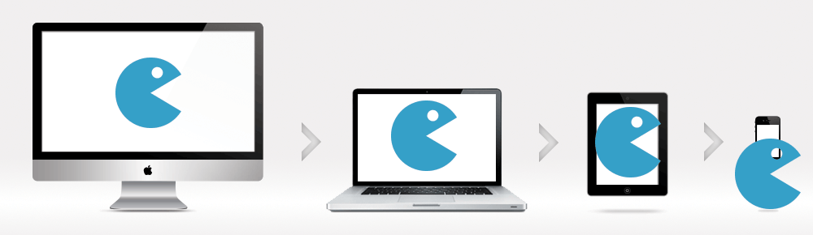
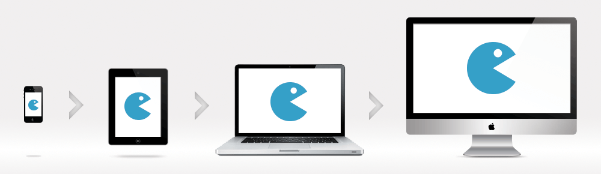

Top 10 most deadly CSS mistakes made by new and experienced developers
Published July 2019. Written by Bill Mei.
For years, I’ve seen numerous engineers working at my clients make the same common mistakes with Cascading Stylesheets (CSS). Even the talented, experienced engineers make these mistakes despite their expertise across broad technical areas because they haven’t dedicated time to learning CSS the same way they dedicated time to learning algorithms in university.
I think CSS is perceived as an unintuitive and difficult language to work with because of these common mistakes that thwart most developers when they try to write CSS. If you can avoid these mistakes, you’ll see that CSS is actually a straightforward, easy-to-understand language that doesn’t deserve its reputation.
What follows are the top 10 most deadly mistakes I’ve seen engineers make throughout my consulting engagements, listed in increasing order of severity. The more serious the mistake, the harder it is to recover from without a complete re-write of the codebase.
Mistake #10: Following the DOM when writing selectors
Let's take this HTML page as an example:
<body>
<div class="container">
<div class="main-content">
<div class="blog-row">
<div class="blog-col">
<section>
<article>
<a href="#">This link is not bold</a>
<p><a href="#" class="bold">This link is bold</a></p>
</article>
</section>
<section>
<a href="#">This link is not bold</a>
</section>
</div>
</div>
</div>
</div>
</body>Some developers like to maintain a minimalist ethos where they try not to clutter up the HTML with lots of classes, by using the DOM structure as a guide to writing CSS selectors, so that their selectors follow the structure of the DOM tree like so:
🚫 Mistake
body .container .main-content .blog-row .blog-col section article p a {
font-weight: bold;
}Preprocessors like SASS make this especially tempting because they make it easy and natural to nest selectors:
🚫 Mistake
body
.container
.main-content
.blog-row
.blog-col
section
article
p
a
font-weight: boldHowever, this “minimalism” is misguided because by keeping the HTML “clean”, you end up cluttering the CSS and making it harder to understand, debug, and change. Your CSS becomes inflexible, as the long combinator chains force the CSS to take on the job of replicating the structure of HTML, but that’s not the job that CSS is supposed to do.
The job of CSS is to provide styling, and the job of HTML is to provide the structure. Just because the DOM tree looks one way does not mean the CSS should match it—the way you write CSS should be totally independent of the HTML. If you decide to change the structure of the HTML, then you’ll have to go back and update every combinator chain you’ve made in CSS as well, which is painful, error-prone, and adds unnecessary work.
Instead, I recommend using targeted classes on your elements whenever possible. If you need to cherry-pick a specific element out of your page, a class selector can do the job just fine:
✅ Correct
.bold {
font-weight: bold;
}These code samples come from Painless CSS, a book and video course that teaches you CSS from first principles. You can download the full repo with all 60 code samples and solutions in the course.
Now if you ever change your mind about the ordering of the links on the page, you don’t need to re-write your entire CSS rule. You can simply move the .bold class onto the element you desire.
Luckily, this mistake is less of an issue if you use a CSS-in-JS implementation. However, CSS-in-JS is not yet widely adopted (as of 2019) and I still see unnecessarily chained selectors in codebases that do not use any preprocessors.
More generally, you should avoid overly targeted or overspecified selectors, and also avoid using !important. The CSS Specificity Tournament gives us an intuitive sense of why overpowered selectors are bad. If a selector is enormously powerful in the tournament, it wins faster and at earlier rounds, meaning the only way to beat a powerful selector is to write another selector that is even more highly powered.
This tendency for specificity to always escalate is known as a specificity war. Like stockpiling nuclear weapons, no one wins at this war—it only becomes harder to de-escalate as specificity increases. The only way to avoid an all-out specificity war is to not stockpile highly powered selectors in the first place.
Mistake #9: Ignoring SEO when writing HTML
Search Engine Optimization (SEO) is not simply a task you offload to your offshore marketing team once you’re done coding. SEO should be something you take into account while you’re coding, especially because some factors that affect SEO are hard to change once they are already implemented in production; for example, your site’s URL scheme or your services architecture.
One thing that impacts SEO in the HTML itself is making sure you use semantic tags, because your choice of tags affects how search engines understand and rank your content. If you want to show up near the top of the search results, choosing the right tags is one of the first places to start.
For example, let’s say you are writing a blog post about real estate prices in Toronto. You could just put everything into <div> elements; however, a <div> is a generic, unsemantic tag which doesn’t imply any inherent meaning in the content. Instead, you should pick a more specific, semantic tag such as <article> to contain the article, <nav> to contain some links to other blog posts, and <table> to contain the tabular data about real estate prices.
The advantage of choosing more specific, semantic tags over generic, unsemantic tags is that you are giving search engines more information about your website, which allows the search engine crawler to better understand and deliver content relevant to a reader’s search query.
Let’s take a look at headers, for example. There are six potential header tags, in order from most important header to least important header:
<h1><h2><h3><h4><h5><h6>
<h1> is your most important header, because it is a special signal to the search engine that this is the headline or title of your content (there is also the <title> tag, but most search engines take both into consideration). Additionally, if your user is vision impaired and uses a screen reader, most screen readers know to read <h1>s aloud straight away because it is assumed that this is the headline of your content.
This means that if you use an <h1> for anything that is not a headline, or if you have more than one <h1> on a page, the search engine will be confused, and your “real” headline may not show up in the search results.
The exception to this is when you nest multiple <h1>s in different sections. Take the following example:
<article>
<h1>My cool blog post</h1>
<p>This blog is so cool!</p>
</article>
<footer>
<h1>Contact Us</h1>
<p>Tel: 867-5309</p>
</footer>Even though there are two <h1>s on this page, the first one has a parent of <article> and the other one has a parent of <footer>. Since the search engine understands that the <article> is inherently more interesting and important than the <footer>, it can appropriately use the <article>’s <h1> tag instead of the <footer>’s <h1> tag to determine the headline. So in a certain sense, it matters who your parents are, to determine how important you are. Just like in real life. 😉
There are many more factors that influence your search engine ranking beyond the ones mentioned. To stay on topic in this article, I encourage you to read a book on SEO if you’re interested in learning about this topic in more detail.
Mistake #8: Using px units
Actually, using px units is fine in certain cases. The real mistake is using absolute instead of relative units.
We prefer using relative measurements such as em (The length of an Em), % (percent), rem (root-Em), and others whenever possible. This ensures that the website scales proportionally according to your choice of font, and according to the user’s choice of zoom level.
🚫 Mistake
p {
font-size: 16px;
line-height: 20px;
margin-bottom: 8px;
}✅ Correct
body {
font-size: 16px;
}
p {
font-size: 1rem;
line-height: 1.25;
margin-bottom: 0.5em;
}These code samples come from Painless CSS, a book and video course that teaches you CSS from first principles. You can download the full repo with all 60 code samples and solutions in the course.
The problem with using absolute units like px is that every user has a different monitor size, and their browser windows (viewports) also have assorted sizes. This is counterintuitive because in almost every other realm of our lives, like interior decorating, city planning, or baking, we always deal with absolute measures. But on the web, the canvas that we’re painting on will suddenly change proportions every time a new person looks at it.
This makes it impossible for your website to always have the same proportions everywhere, so you must try to place your elements in relative terms (brick B should be as big as brick A) instead of absolute terms (brick B is a 200px-by-400px rectangle); otherwise the available space on the screen does not scale appropriately to every window size. Relative units make this easy—px locks your design to a specific zoom level and makes your design hard to scale to different devices.
Mistake #7: Trying to achieve a “Pixel Perfect” design
More generally, “Pixel Perfect” design is a bad goal to aim for when writing CSS.
Modern websites must work across a variety of devices (mobile, desktop, tablet, and watches), of which there is a cornucopia of screen sizes, screen resolutions, operating systems, user settings, and JavaScript engines that interfere with your ability to render “Pixel Perfect” designs.
In my opinion, a cultish pursuit of “Pixel Perfect” design will cost you in significant extra code complexity to deal with these inconsistent rendering schemes (along with the increased risks of bugs that result from complex code) for a small benefit that will probably get washed out once the next generation of devices, operating system versions, and browser versions get released.
In practice, the only situations where it makes business sense to pursue this kind of design perfection occur when you are a large company like Apple or Google and have the resources (money) to pay large design teams to make 0.01% improvements in the design. But unless your business also makes $400,000 per minute, a 0.01% improvement won't earn you millions more dollars more year—instead, it'll just create unnecessary engineering complexity.
Don’t confuse a “Pixel Perfect” design for great design. Truly great design is about leaving an emotional impact on the user that lasts with them. It’s the delight they get when they unbox your product and the joy they get from engaging with your website. It’s not the adoration of your choice of a 16pt font instead of a 15pt font.
Mistake #6: Breaking the document flow
The tricky part about CSS is you can write different CSS code to achieve the same visual result. For example, to horizontally center an element on a page, you could use any of the following techniques, and they’ll all look the same to the user:
- Surround the element with
until it looks centered - Explicitly set the
widthand leftmarginof the element to a fixed value that makes it look centered. - Use
text-align: center - Use
margin: 0 auto - Use a combination of
floated siblings and a clearfix. - Use a combination of
position,left, andtransform.
Which technique is best? Depending on your goals, it may be perfectly correct to use any of the above techniques.
Generally speaking, there are some rules of thumb we try to follow to select the best layout method.
First, we eliminate any technique that uses absolute measures instead of relative measures. This means #1 and #2 explicitly setting the width are out.
Second, we prefer techniques that do not modify the document flow over techniques that break the document flow. This is because elements follow the document flow by default, so if you break this default assumption, you’ll make it harder for your co-workers (or yourself, 6 months from now) to understand what’s going on. This means #5 float and #6 position are out.
More generally, we prefer techniques that require as little change to other things as possible. Keeping your footprint small helps you avoid sprawling, complicated code that is hard to maintain.
Technique #3, text-align: center works only on inline elements, so we’ll choose #3 whenever our HTML is already an inline element, and we avoid the extra need to add a display: inline CSS declaration.
Technique #4, margin: 0 auto works only on block elements, so we’ll choose #4 whenever our HTML is already a block element, and we avoid the extra need to add a display: block CSS declaration.
Breaking the document flow too frequently (e.g. overzealously using float) increases your footprint and makes your layout harder to understand. When there are multiple options to write CSS code to achieve the same visual result, we prefer using techniques that have a smaller footprint.
Mistake #5: Not separating design from layout
The job of CSS is to provide styling, and the job of HTML is to provide the structure. Generally, you should first write HTML in a way that captures the information hierarchy of the page, ignoring any design concerns. Afterwards, you can add CSS to make things look nice.
While HTML provides structure, it cannot always position elements on the exact spot of a page you want it to appear. Thus, you can use CSS to scaffold the correct layout of the page so that the elements appear in the right location. Once an element is placed into the right place on the page, it’s easy to dress it up after and make it look nice without worrying about its location, so you should think of the “layout CSS” as a different job from the “lipstick CSS”.
🚫 Mistake
.article {
display: inline-block;
width: 50%;
margin-bottom: 1em;
font-family: sans-serif;
border-radius: 1rem;
box-shadow: 12px 12px 2px 1px rgba(0, 0, 0, .2);
}
.sidebar {
width: 25%;
margin-left: 5px;
}<div class="article"></div>
<div class="article sidebar"></div>✅ Correct
/* Layout */
.article, .sidebar {
display: inline-block;
}
.article {
width: 50%;
margin-bottom: 1em;
}
.sidebar {
width: 25%;
margin-left: 5px;
}
/* Lipstick */
.card {
font-family: sans-serif;
border-radius: 1rem;
box-shadow: 12px 12px 2px 1px rgba(0, 0, 0, .2);
}<div class="article card"></div>
<div class="sidebar card"></div>These code samples come from Painless CSS, a book and video course that teaches you CSS from first principles. You can download the full repo with all 60 code samples and solutions in the course.
Making sure to keep the job of “lipstick” separate from the job of “layout” is also known as separation of concerns, and this is a common software engineering principle that helps keep our code maintainable and easy-to-understand.
We want to use the appropriate tool for the job because separating our CSS in this manner makes it easy to move an element to another part of the page without smudging the lipstick, and also makes it easy to change the color of the lipstick without disrupting the layout. Mixing the two forces us to do both jobs every time we add a new feature, even if it only warrants one job.
Mistake #4: Designing for desktop before mobile
Gone are the days where mobile websites were an optional extra tacked on by development agencies to pad invoices. Most people now surf the web on their phones and it’s common to see more than 50% of your web traffic come from phones and tablets.
People love to extol the “mobile first” philosophy but they forget that “mobile first” implies desktop is a second-class citizen. Instead, the “mobile first” champions behave in the opposite manner, by writing code for desktop first and then later trying to cram the site into a phone. They use @media queries to handle the exceptional cases on mobile, but really desktop should be the exceptional case.
In this mobile era, your users first find you through their phones, and then only later do they upgrade to the desktop experience if they like your product enough.
But does mobile truly come first in the minds of your designers, developers, and product managers? Do you code the mobile site first and then later build the desktop version? Do your designers create wireframes and mockups for mobile before they create wireframes and mockups for desktop? Do you perform A/B testing and solicit user feedback on the mobile version of your website before you test the desktop version?
🚫 Mistake
.container {
width: 980px;
padding: 1em;
}
@media (max-width: 979px) {
.container {
width: 100%;
padding: 0.5em;
}
}✅ Correct
.container {
width: 100%;
max-width: 980px;
padding: 0.5em;
}
@media (min-width: 980px) {
.container {
padding: 1em;
}
}These code samples come from Painless CSS, a book and video course that teaches you CSS from first principles. You can download the full repo with all 60 code samples and solutions in the course.
That your users are mostly mobile users is not the only reason to design and develop for mobile before desktop. The primary reason is that it’s fundamentally easier to develop for a small screen before scaling the design up to a large screen, and not the reverse. You can always make existing elements bigger to fill a blank space on a larger screen, but it’s trickier to remove elements from a large screen to make them fit into a smaller one.
 Image credit: Zurb
If you ship a mobile website without a desktop site, it will cost you $X to build now, and then $X again to add a desktop site later. But if you ship a desktop website without a mobile site, it will cost you $X to build now, and then $2X to add a mobile site later. This is what people mean by “technical debt”: you are paying a lower cost today, at the expense of paying a greater cost over the long run.
Now, if you are blitzscaling, it may make sense to be “inefficient” and build only the desktop website to prove product-market fit with the understanding that a mobile site will cost more later, but this is a business decision. Engineers will prefer building the mobile site first even if it doesn’t always make business sense, so adjust this advice accordingly depending on your stage of growth.
Mistake #3: Not using a naming scheme
Namespaces are one honking great idea – let’s do more of those!
— PEP 20: The Zen of Python
It’s always exciting to dive straight into writing code without thinking carefully about your naming scheme for variables. For example, do you call it .img or .image? .blog-img or .img-blog or .blog-image or .blog-img? If you call it .blog-img, will you later agree on .ad-img and .thumbnail-img?
It seems minor, but CSS is harder to refactor than other languages because we currently don’t have any static analysis tools for CSS that let us perform automated refactoring/renaming. CSS classes can be dynamically added, removed, and constructed using JavaScript, so it’s impossible to find “unused” CSS selectors—just because a snippet of CSS isn’t being used in one state of one page, doesn’t mean it’s not used ever. BEM doesn’t solve this problem if your team can’t agree on whether to call it .center, .centre, .centered, .text-center, or .align-center.
This problem is partially solved by using a CSS-in-JS library because these frameworks remove the global scope of CSS and encourage you to keep styles alongside their associated components. However, CSS-in-JS is not yet widely adopted (as of 2019), and I still have on my wishlist a static analysis tool for CSS—theoretically, CSS-in-JS should make it possible to implement one for the first time.
This is also partially solved by using a design system, where you agree on a fixed set of variables for colors, spacing, fonts, etc., but unused classes have a tendency to persist because we don’t have an automated way to identify and remove them.
Developers are rightfully hesitant to remove anything that might break the website, so they err on the side of caution and prefer to grow the waste pile. Worse, unless you are diligent about promoting and clearly communicating your design system, it may simply get ignored as your co-workers avoid reading your documentation and continue in their old habits.
Mistake #2: Not reading the documentation
It seems so easy. Just install Bootstrap and you are good to go right? Unfortunately, a CSS framework can often cause more problems than it solves if you don’t really understand it, and accidentally go against its principles. No matter if you are following an open-source design system like Bootstrap, Material Design, Foundation, or your company’s own home-grown design system.
One of the best things I ever did for my career was to just set aside 4-8 hours to read the official documentation in its entirety every time I wanted to use a new programming language or framework. As in, not skimming the docs or only searching for keywords that are relevant to my immediate needs, but actually reading it cover-to-cover like a book.
For example, before I started using Bootstrap, I set aside 6 hours to read its documentation in its entirety. This has saved me countless hours in implementation later, especially in avoiding grid nesting issues that seem to be endemic, because those who skipped the documentation didn’t realize that you’re not allowed to nest Bootstrap containers.
Diligently reading the documentation is important because many frameworks require you to un-learn the muscle memory you picked up from previous frameworks, and you can’t know where the pitfalls are until you’ve read the whole manual. For example, component inheritance was a common pattern in older front-end frameworks such as Backbone. However, newer frameworks such as React work best when using composition instead of inheritance, but you won’t realize this if you skip the docs because you’ll just default to using the inheritance patterns that you’re used to.
More generally, it’s dangerous to get trapped by the muscle memory you’ve developed from old technology, which leads us to the final fatal mistake:
Mistake #1: Not following a systematic plan to learn CSS
Technology is ever-evolving, and the only way to stay relevant is to follow a consistent plan of learning and improving.
It’s dangerous to learn by memorizing knowledge from dogma. Some experienced developers have a visceral negative reaction to hearing “inline styles” because they were taught early in their careers the best practice to “never use inline styles”.
Indeed, “never use inline styles” was a best practice a long time ago when it made HTML hard to read, hard to debug, and hard to change. However, the technology chugs along and eventually upends the assumptions that lead to these “best practices”. New assumptions lead to new best practices.
Inline styles are only painful when you write them by hand—but if you use a CSS-in-JS library to manage your inline styles for you, these downsides disappear, and you are left only with the advantages of code modularity, automated testing, and simple management that works hand-in-hand with a front-end JavaScript framework such as React.
If you are stuck with the dogma of “never use inline styles”, you won’t have the curiosity to explore what it means when the original assumptions changed. It’s important to use a systematic, structured plan to learn CSS from the ground up and not just search Google for tutorials that only focus on surface-level practices.
Unfortunately, I tried looking for free online resources that help you learn CSS in a structured, systematic way, and there simply aren’t any good resources out there. The existing CSS resources either are too technical and assume you already know how browser C++ rendering engines work (which is not at all approachable), or they present only quick and dirty tricks instead of teaching you foundational principles.
Because there is no good resource that gives you a solid mental model for how CSS actually works from the ground up, you’re left copy/pasting stuff from Stack Overflow and hoping it works. This leaves lots of people with a patchwork knowledge of CSS, knowing just enough to solve specific bugs that arise, but feeling completely helpless when faced with a hard-to-understand bug that seemingly takes hours to fix.
Frustrated by seeing people repeat the same mistakes with CSS in my years of consulting for software startups, I decided to take matters into my own hands and write my own resource. I created a course, Painless CSS, to provide a comprehensive, first-principles guide to learning CSS the right way and to give you the real skills you need to write professional-grade CSS.
The secret is that CSS is actually a straightforward language once you are equipped with the right mental models. I created the Painless CSS course to share these insights with you because I want CSS to finally shed its undeserved reputation and rise from the ashes as the beautiful programming language that it is.
I hope you enjoyed this article, and that it gave you a sense of how to avoid the top 10 most common mistakes I see people make when they write CSS. There are many other mistakes I see people make with CSS—you can learn about them all in detail, and how to fix them in the Painless CSS course here: www.painlesscss.com
In the meantime, I hope this article was helpful to you and inspired you to take your plan for learning CSS seriously, no matter if you decide to purchase my course or someone else’s. It’s never been a more exciting time to learn front-end web development, and I wish you the best in your programming journey.

Painless CSS is a book and video course that teaches you from first principles how to build beautiful, intuitive websites that are a joy to design and maintain.
Learn more at www.painlesscss.com